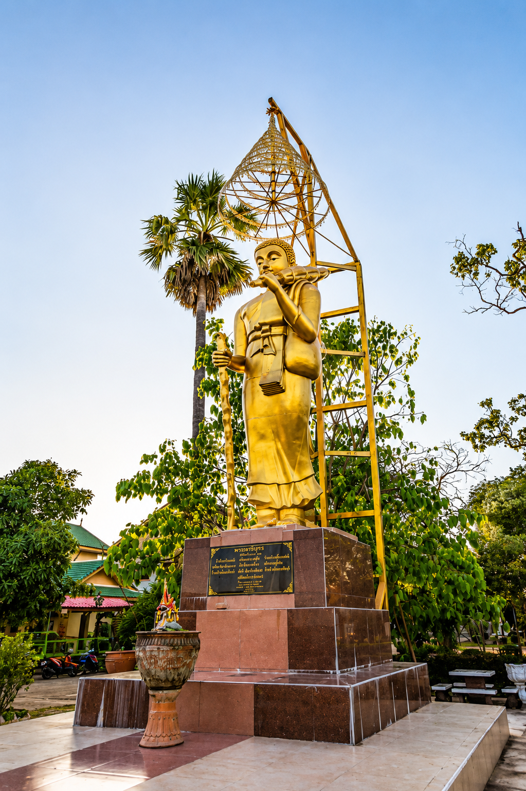
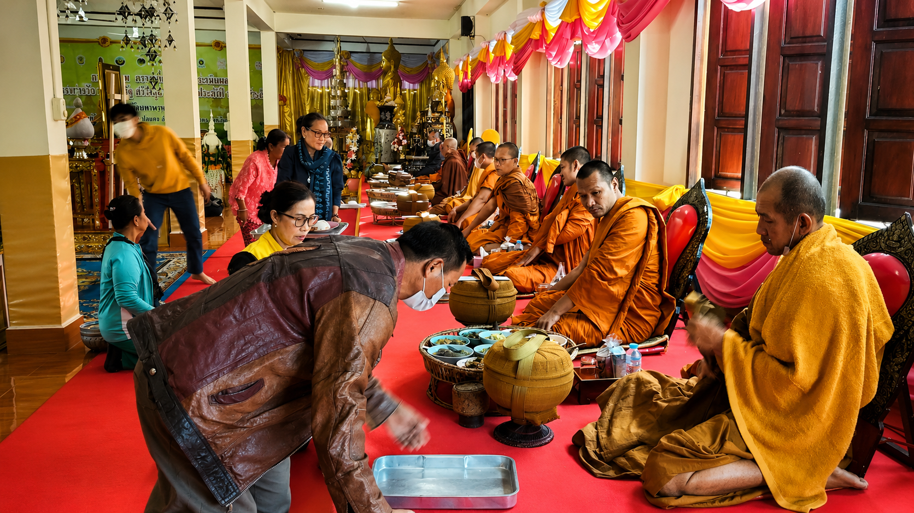
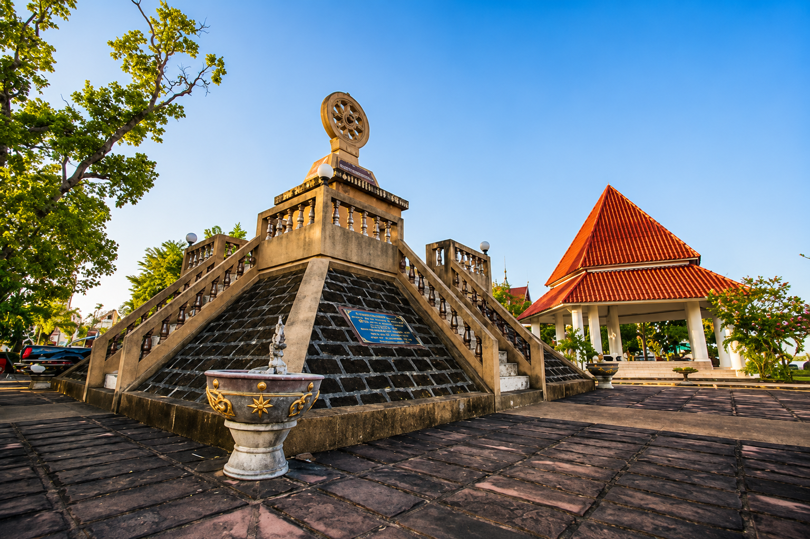

- อายุสมัย:
- แหล่งที่พบ:
วัดท่าวัด จ.สกลนคร
แหล่งเรียนรู้วัตถุโบราณยุคก่อนประวัติศาสตร์และศิลปะลพบุรีเสมือนจริง 3 มิติ (3D)
เลื่อนดูทีละหน้าให้ครบทั้ง 24 รายการ และกดเปิดดูโมเดล 3 มิติได้ทุกรายการ
กำลังโหลดคลังข้อมูลวัตถุโบราณ...
เรื่องราวประวัติศาสตร์ของกลุ่มโบราณสถาน 3 สัญชาติ (เหนือ-กลาง-ใต้) ริมฝั่งหนองหาร
ชุมชนขอมโบราณริมฝั่งหนองหารได้ร่วมใจสร้างวัดเหนือขึ้นมาเป็นศูนย์กลางแห่งจิตวิญญาณ ในอดีตมีการขุดค้นพบชิ้นส่วนเทวรูป พระพุทธรูปปูนปั้น และใบเสมาแกะสลักศิลาแลงอย่างวิจิตรตระการตา
โบราณวัตถุเหล่านี้สะท้อนถึงการปะทะประสานทางวัฒนธรรมและความรุ่งเรืองทางพุทธศาสนาในดินแดนแอ่งสกลนครเมื่อหลายร้อยปีก่อน
ชาวมอญสมัยทวารวดีได้สร้างวัดกลางขึ้นเพื่อเป็นสถานที่บำเพ็ญบุญของชุมชน บริเวณนี้ได้ขุดพบแนวเสมาหินสกัดทรงวงล้อธรรมจักรที่สมบูรณ์ ชิ้นส่วนหม้อเคลือบดินเผา และเครื่องประดับโลหะโบราณ
การค้นพบเหล่านี้บ่งบอกอย่างแน่ชัดว่าริมหนองหารเคยเป็นเส้นทางค้าขายและแหล่งตั้งถิ่นฐานที่มีอารยธรรมสูงส่งมาตั้งแต่พุทธศตวรรษที่ 12

ชาวลาวอพยพยุคล้านช้างได้ร่วมกันสร้างวัดใต้เพื่อสืบทอดขนบธรรมเนียมประเพณีลุ่มแม่น้ำโขง บ่งบอกผ่านทางพระพุทธรูปทองสัมฤทธิ์ปางมารวิชัยศิลปะแบบล้านช้างอันงดงามอ่อนช้อย
ประเพณีแห่กฐินทางน้ำของบ้านท่าวัดใต้ถือเป็นมรดกทางวัฒนธรรมทางสายน้ำเพียงหนึ่งเดียวที่ได้รับการสืบสานสืบต่อกันมาจนถึงปัจจุบัน

ในปัจจุบันวัดทั้งสามได้รับการรวมเข้าเป็นหนึ่งเดียวภายใต้ชื่อ "วัดมหาพรหมโพธิราช" หรือที่ชาวบ้านเรียกขานกันทั่วไปว่า "วัดท่าวัด" เพื่อเป็นศูนย์รวมจิตใจและสืบสานมรดกทางวัฒนธรรมร่วมกันอย่างสามัคคี
การพัฒนาหอจดหมายเหตุดิจิทัลระบบ WebAR นี้เป็นก้าวสำคัญในการสืบทอดภูมิปัญญาท้องถิ่นให้คนรุ่นหลังได้เรียนรู้ผ่านระบบ 3 มิติอย่างใกล้ชิดและเข้าใจง่าย

เรายินดีต้อนรับทุกท่านสู่ชุมชนท่องเที่ยวเชิงวัฒนธรรมบ้านท่าวัด ริมฝั่งหนองหารสกลนคร
บ้านท่าวัด ตำบลเหล่าปอแดง อำเภอเมือง จังหวัดสกลนคร 47000
เปิดชมโบราณคดีและกราบสักการะหลวงพ่อพระประธานทุกวัน เวลา 08.00 น. - 17.00 น.
องค์การบริหารส่วนตำบลเหล่าปอแดง หรือ กลุ่มวิสาหกิจท่องเที่ยวท่าวัดสกลนคร
ริมแม่น้ำหนองหาร ตำบลเหล่าปอแดง จ.สกลนคร
กดตรงนี้เพื่อเปิดแผนที่นำทางบนมือถือ